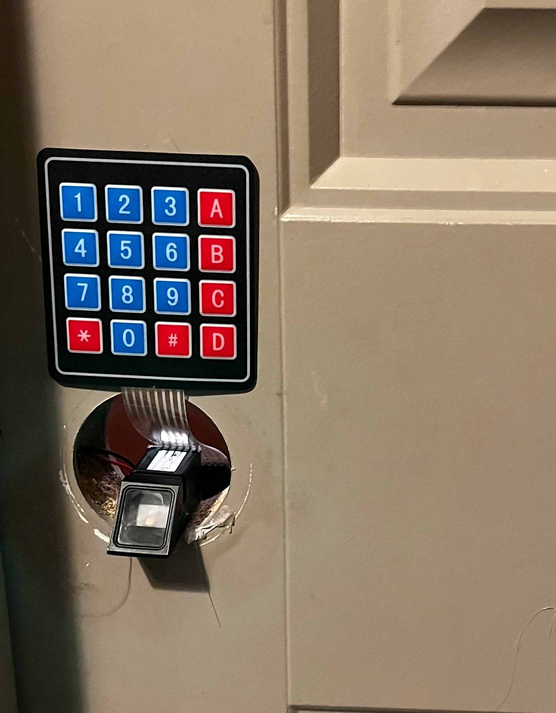

.Door_Lock()
#Project's main focus was to become more familiar with device and web server relations (Focus was altered)

/*The projects main focus was to create a door lock that was openable by both fingerprint and through a website.
After the project was compelted I realised something I had overlooked.
The wifi module I was using, ESP8266, was to weak to reach my wifi router,
and would sometimes make a connection othertimes it wouldn't.
I needed a more reliable second means of entering other than the fingerprint sensor,
so I decided to implement a matrix keypad as shown*/
/*1. Ardunio Nano: With its limited memory capacity, was only able to support two external devices.
2. Motor Controller: Capable of providing AC current, was used to control the solenoid which latches the door shut.
3. Power Module: To support the power consumption of the motor controller and the nano along with the devices, external power was requried.
The leds and buttons present in the image were for testing and extra functionalities.*/
/*Final Addition would be to create and add an enclosure for all the components.
Although the focus was altered, my website was fully functional and the ardunio was able to connect to it reliably,
as long as a close distance to the router was maintained,
and was only scraped due to the limitations of the wifi module*/